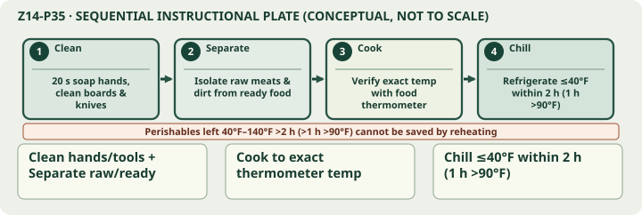

Z14-P35 · Food production and preservation · New manuscript
Apply the four food-safety pillars (Clean, Separate, Cook, Chill) in every kitchen
Prevent preventable foodborne illness during daily cooking, bulk garden harvest processing, and emergency meal preparation.
When it applies · Home kitchens, harvest wash stations, canning days, and power-outage food handling.
Equipment · Soap and safe running water, separate cutting boards, calibrated food thermometer, and working appliance thermometers.

Actions
- Clean & Separate: Wash hands 20 seconds with soap and safe water before/after handling food, wash cutting boards/knives/counters cleanly between tasks, and keep raw meat, poultry, seafood, eggs, and unwashed garden dirt strictly separated from ready-to-eat foods.[F01, P16]
- Cook & Chill: Cook meats, poultry, eggs, and reheated leftovers to exact USDA safe minimum internal temperatures verified with a food thermometer (never guessing by color!), and refrigerate perishables at 40°F or below within 2 hours (1 hour if room/outdoor air exceeds 90°F).[F02, F03]
- Double-check all four pillars during hectic canning or harvest weekends when counter clutter and long hours increase cross-contamination and room-temperature sitting mistakes.[F01, F03, P16]
Failure recognition · Slicing fresh garden tomatoes on the same unwashed wooden cutting board just used to trim raw chicken for pressure canning.[F01, P16]
Verify · Confirm 20-second handwashing, dedicated raw vs ready-to-eat boards, food thermometer in use, and ≤2-hour chill timing.[F01, F02, F03]
Stop or change course · Perishable cooked or cut foods held in the 40°F–140°F danger zone longer than 2 hours (1 hour >90°F) must be discarded—not reheated to "save" them.[F03]
Evidence and editorial notes
- F01 · USDA / FDA / CDC · Four Steps to Food Safety (current web edition)
- Section: Clean and Separate · Conditions: Food preparation with safe water and surfaces
Support: Wash hands and separate raw animal foods and juices from ready-to-eat food.
Limitations: Requires safe water or approved hand hygiene substitutes in outages. · Conflicting evidence: None; retained for food safety pack completeness.
Editorial note: Maintains five-pack integrity. · Specialist reviewer: Food safety and public health
Primary source · checked 2026-11-24 - F02 · USDA / FDA / CDC · Four Steps to Food Safety (current web edition)
- Section: Cook > Minimum internal temperature · Conditions: Food preparation with a working food thermometer
Support: Use food-specific safe internal temperatures; visual appearance alone cannot verify cooking.
Limitations: Thermometer calibration and probe placement affect readings. · Conflicting evidence: None; retained for food safety pack completeness.
Editorial note: Maintains five-pack integrity. · Specialist reviewer: Food safety and public health
Primary source · checked 2026-11-24 - F03 · USDA / FDA / CDC · Four Steps to Food Safety (current web edition)
- Section: Chill > Refrigerate promptly · Conditions: Perishable food outside temperature control
Support: Refrigerate within two hours, or within one hour above 90°F.
Limitations: Ambient temperature spikes shorten safe holding windows. · Conflicting evidence: None; retained for food safety pack completeness.
Editorial note: Maintains five-pack integrity. · Specialist reviewer: Food safety and public health
Primary source · checked 2026-11-24 - P16 · USDA / FDA / CDC · Four Steps to Food Safety (current web edition)
- Section: Clean, Separate, Cook, Chill > Produce Washing and Cross-Contamination · Conditions: Garden-to-kitchen harvesting, food prep, and preservation workspaces
Support: Wash hands 20 seconds with soap and safe water, scrub firm produce under running safe water before peeling/cutting, keep raw animal foods strictly separate from ready-to-eat produce, and sanitize prep surfaces and utensils between tasks.
Limitations: Washing produce with soap, detergent, or bleach is unsafe and not recommended. · Conflicting evidence: None; extends F01–F03 into garden harvest and home preservation.
Editorial note: Anchors kitchen sanitation and cross-contamination barriers in Z14. · Specialist reviewer: Food safety and public health
Primary source · checked 2026-11-24
Source lineage · USDA/FDA/CDC FoodSafety.gov; new manuscript · Classification · New manuscript.